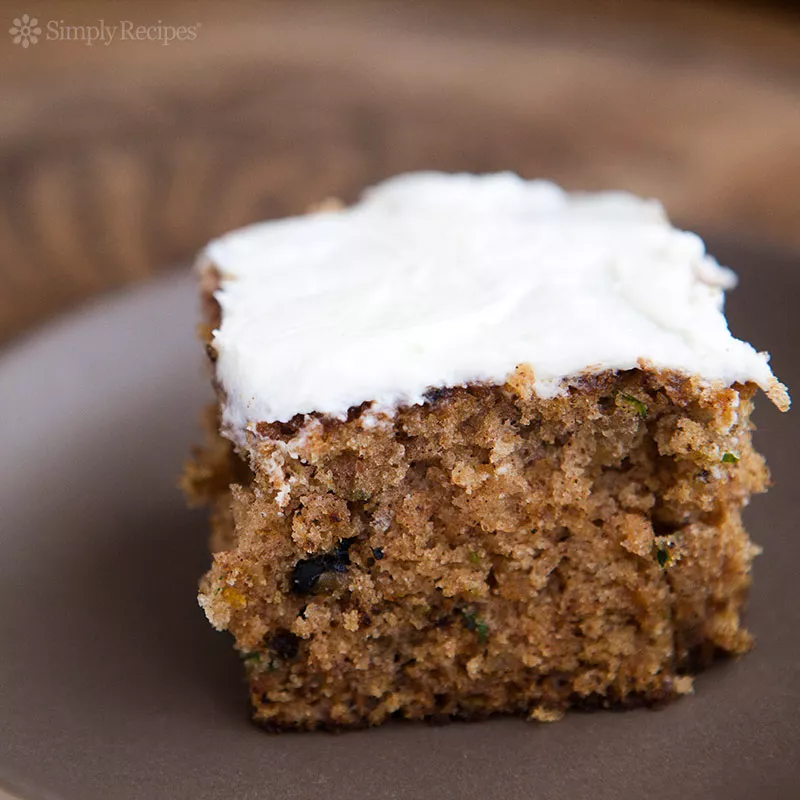

Zucchini Cake recipe

Description
Rummaging through my mother's old recipe file recently, I stumbled upon a photocopy of a handwritten recipe for zucchini cake. The recipe is in my grandmother's hand, my dad's mom. She was the baker in the family (a title now passed on to my father). She moved from St. Paul to live with us in Los Angeles when I was four.
Ingredients
- 2 cups all purpose flour
- 2 tsp cinnamon
- 2 tsp baking soda
- 3-4 medium zucchini
- 2 cups sugar
- 3 eggs
- 1 tsp vanilla extract
Steps
- Preheat oven to 350°F. Butter a 9x12 or 9x13 baking pan (I used a pyrex pan).
- n a medium bowl, whisk together the flour, cinnamon, baking soda, salt, and baking powder. Set aside.
- In a mixer, beat the 3 eggs on high speed until frothy. Lower the speed and beat in the sugar, vegetable oil, vanilla, and lemon zest (if using). Stir in the flour mixture, a third at a time. Stir in the zucchini and chopped nuts and/or raisins.
- Pour mixture into a 9x12 or 9x13 baking pan. Bake at 350°F for 40 to 45 minutes. (My grandmother's notes say you can also bake in an angel food pan for 1 hour.) Remove from oven and let cool completely before frosting. (While the cake is cooling, let the frosting's cream cheese and butter sit at room temperature to soften.)
- To make the frosting, beat together the cream cheese and butter. Add the powdered sugar and beat until smooth.
- Frost the cake and serve. Store covered with aluminum foil.